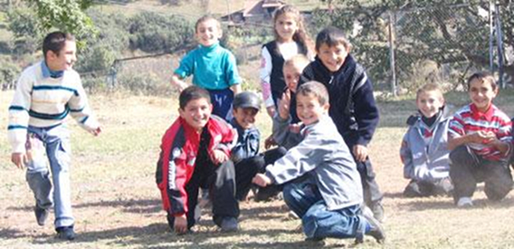

EDITOR'S NOTE
It is already a month that we have published 10 letters-compositions. The comment field is still empty. Not all, but some of them, do wish somebody to respond and leave their feedbacks, they do wish to keep the conversation going.
This story is a kind of reaction, reply. I happened to find it in one of the forums two years ago. The forum dealt with the discussion of a series of articles written by Alekper Aliev after his first visit in Yerevan. I know nothing about the author of the article. Waiting his response: info (at) southcaucasus.com.
The compositions and letters have been collected here.
It is already a month that we have published 10 letters-compositions. The comment field is still empty. Not all, but some of them, do wish somebody to respond and leave their feedbacks, they do wish to keep the conversation going.
This story is a kind of reaction, reply. I happened to find it in one of the forums two years ago. The forum dealt with the discussion of a series of articles written by Alekper Aliev after his first visit in Yerevan. I know nothing about the author of the article. Waiting his response: info (at) southcaucasus.com.
The compositions and letters have been collected here.

GUYS, I WILL STATE HONESTLY!
Guys, I will state honestly! While reading the report made by Alekper Aliev about the trip to Yerevan, especially the last one, I then imagined myself to be in his place and cried because we had been separated in such a way that I could have never dreamt of it before.:( It is indeed very sad and very dramatical. In Sheki, the place where I lived, there were a big Armenian cemetery which was very neat and well-attended. I remember when Armenians were leaving Sheki. Before they left it they were going past the cemetery so as to say goodbye to the graves of their relatives and close people. I will tell you one story.
Many cornelian trees used to grow around the cemetery. At that time I was 12-13 years old. My friends and I used to go there to fetch cornels. At that time Armenians were said to be dangerous people and one could not approach them. And should an Armenian call you, you’d better run home or rather far off, because they could kill us. It is a clear matter that we were little kids and believed and were scared of it. At that very time we made up our mind to gather cornels near the Armenian cemetery. My friend and I having taken buckets, and trying to be quiet and unnoticeable were gathering cornels. All of a sudden we heard footsteps nearby. We were too much scared and hid ourselves. Looking around I saw a few men, women and two children. One of them was quite little, 3-4 years of age, the second was almost of my same age. To cut a long story short, they were weeping. The woman was telling her boys: “Look, this is your father, this is the grave of your father, we are saying goodbye to him for a very long time. But some day we will come back, I promise you. Do say goodbye to your father”. And all of them burst out crying. I am a very emotional person and I couldn’t restrain myself and burst out crying, as well. The woman heard my voice and was startled. When I realized that they had heard me, I wanted to run away. An adult Armenian guy called me and my friend was crying to me “Don’t go, they will kill you, they are Armenians…” and other nonsense. “I have nowhere to run”, I said to myself, “If they really want to kill me, they will catch me and kill me in any case”. I came up to them. That man patted on my head and said: “Sonny, look, this boy’s name is …. (I don’t remember the name now). His father died and left his son. Only this grave is a reminder of him. Whenever this boy misses his father he comes here but after this nothing will remind him of his father, nothing but memories will be left. He will never see his father’s grave any more. He is leaving this city. To be honest, he is forced to leave his hometown, everything he has ever had in this world. It is the bad people who do it! I know that your school says lots of nonsense about us, that we are murderers, we are bad. Have we done anything bad before? Where on earth are we considered that we are murderers and enemies? Why?” He said and burst out crying and looking straight into my eyes he added: “Remember, sonny, time will come when our peoples will live in peace and amicably. But none will ever be able to return the lives that we will continue wasting on frivolous ambitions! Go ahead, sonny. Be happy. I hope that when you grow up you will punish those who had separated us.”
It was really a shock for me. The next day I told about this incident to my teacher during the lesson. I was punished for it and was made to stand in the corner. Thirteen years have passed since that day but up to now I have been unable to forget that man and that boy who was saying his goodbye to the grave of his father and whenever I remember them I start hating this world, I hate everything, I despise this world entirely!
June 20,2006
Publicaton date: 01-06-08
Many cornelian trees used to grow around the cemetery. At that time I was 12-13 years old. My friends and I used to go there to fetch cornels. At that time Armenians were said to be dangerous people and one could not approach them. And should an Armenian call you, you’d better run home or rather far off, because they could kill us. It is a clear matter that we were little kids and believed and were scared of it. At that very time we made up our mind to gather cornels near the Armenian cemetery. My friend and I having taken buckets, and trying to be quiet and unnoticeable were gathering cornels. All of a sudden we heard footsteps nearby. We were too much scared and hid ourselves. Looking around I saw a few men, women and two children. One of them was quite little, 3-4 years of age, the second was almost of my same age. To cut a long story short, they were weeping. The woman was telling her boys: “Look, this is your father, this is the grave of your father, we are saying goodbye to him for a very long time. But some day we will come back, I promise you. Do say goodbye to your father”. And all of them burst out crying. I am a very emotional person and I couldn’t restrain myself and burst out crying, as well. The woman heard my voice and was startled. When I realized that they had heard me, I wanted to run away. An adult Armenian guy called me and my friend was crying to me “Don’t go, they will kill you, they are Armenians…” and other nonsense. “I have nowhere to run”, I said to myself, “If they really want to kill me, they will catch me and kill me in any case”. I came up to them. That man patted on my head and said: “Sonny, look, this boy’s name is …. (I don’t remember the name now). His father died and left his son. Only this grave is a reminder of him. Whenever this boy misses his father he comes here but after this nothing will remind him of his father, nothing but memories will be left. He will never see his father’s grave any more. He is leaving this city. To be honest, he is forced to leave his hometown, everything he has ever had in this world. It is the bad people who do it! I know that your school says lots of nonsense about us, that we are murderers, we are bad. Have we done anything bad before? Where on earth are we considered that we are murderers and enemies? Why?” He said and burst out crying and looking straight into my eyes he added: “Remember, sonny, time will come when our peoples will live in peace and amicably. But none will ever be able to return the lives that we will continue wasting on frivolous ambitions! Go ahead, sonny. Be happy. I hope that when you grow up you will punish those who had separated us.”
It was really a shock for me. The next day I told about this incident to my teacher during the lesson. I was punished for it and was made to stand in the corner. Thirteen years have passed since that day but up to now I have been unable to forget that man and that boy who was saying his goodbye to the grave of his father and whenever I remember them I start hating this world, I hate everything, I despise this world entirely!
June 20,2006
Publicaton date: 01-06-08